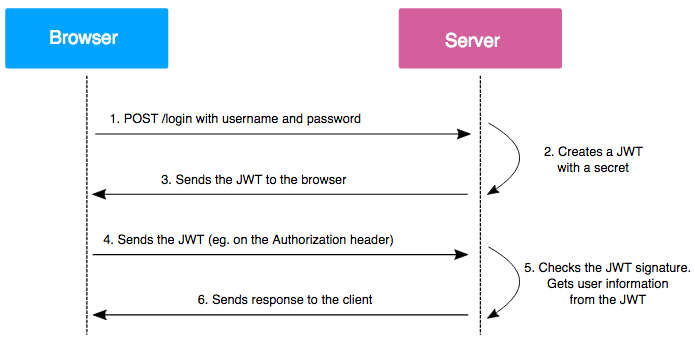

Created by Tatsiana Bivoina
JSON Web Token (JWT) is an open standard (RFC 7519) that defines a compact and self-contained way for securely transmitting information between parties as a JSON object.
JSON Web Token (JWT) is an open standard (RFC 7519) that defines a compact and self-contained way for securely transmitting information between parties as a JSON object.
This information can be verified and trusted because it is digitally signed. JWTs can be signed using a secret (with the HMAC algorithm) or a public/private key pair using RSA or ECDSA.
Here are some scenarios where JSON Web Tokens are useful:
Here are some scenarios where JSON Web Tokens are useful:
Here are some scenarios where JSON Web Tokens are useful:
As a rule, structurally JWT consists of three parts:
As a rule, structurally JWT consists of three parts:
The header and payload are regular JSON objects that need to be further encoded using the base64url algorithm. The encoded parts are connected to each other, and based on them, the signature is calculated , which also becomes part of the token.
The header is the service part of the token. It helps the application determine how the received token should be handled.
This part is a JSON object and has the following format:
{
"typ": "JWT",
"alg": "HS256"
}
The following fields are present here:
The payload carries any information that helps the application in some way identify the user.
This part is a JSON object and has the following format:
{
"id": "1337",
"username": "bizone",
"iat": 1594209600,
"role": "user"
}
The following fields are present here:
The signature is generated as follows.
The header and payload are base64url encoded and then concatenated into a single string using a dot ( ".") as a delimiter.
A signature is generated (in our example, using the HMAC-SHA256 algorithm), which is added to the source string also through a dot.
In pseudocode, the algorithm looks something like this:
signature = HMACSHA256(
base64UrlEncode(header) + "."
+ base64UrlEncode(payload),
SECRET_KEY
)
JWT = base64UrlEncode(header) + "."
+ base64UrlEncode(payload) + "."
+ base64UrlEncode(signature)
The generated JWT is sent to the client, where it is stored in localStorage or sessionStorage, and will be sent from the client to the server on every HTTP request in the Authorization header.
Authorization: Bearer {token}
The server, in turn, when accessing routes that require authorization, extracts data from the token and checks the validity of the token and the presence of the user specified in the JWT.
In modern JWT-based authentication schemes, after passing authentication, the user receives two tokens:
Here are some ways to store your tokens:
The authentication scheme in this case looks like this:
Node.js:
JavaScript:
JavaScript:
You can find the full list of libraries on the official JWT website
JSON Web Tokens are a popular and convenient technology. When used correctly, JWT eliminates common errors of insufficient authorization, allows you to easily and conveniently distribute information flows between services, organize a single entry point to different services with the same credentials, and even improve service performance.
However, if JWT is used incorrectly, you can expose your system to significant risks, up to compromising the accounts of absolutely all users of the system.
So, to use JWT safely, you should: